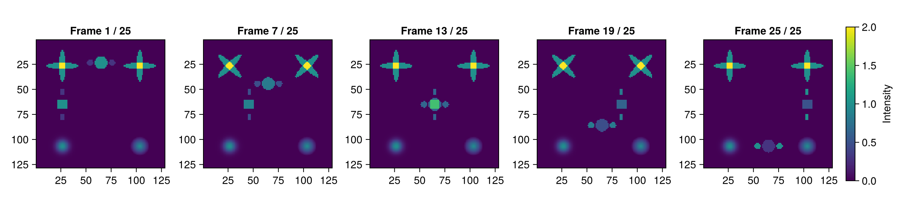
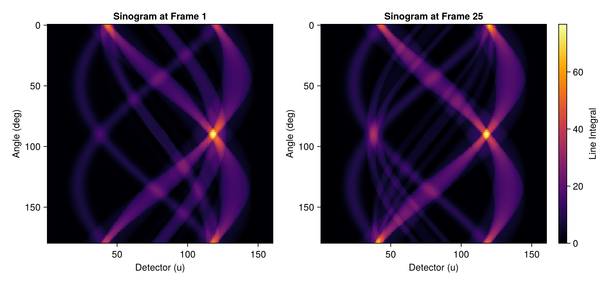
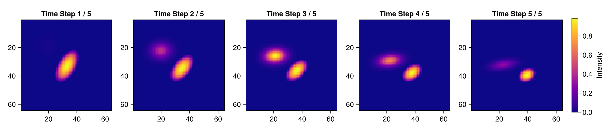

TomoPhantom.jl: Temporal (Dynamic 2D / 4D) Phantom and Sinogram Simulation
This tutorial demonstrates how to generate and visualize time-evolving (temporal / dynamic) phantoms and analytical sinograms using TomoPhantom.jl, modeling physiological motion (cardiac/respiratory cycles) or dynamic material processes (in-situ / operando CT).
Background and Motivation
Conventional CT reconstruction assumes a stationary specimen during data acquisition. However, in live biomedical imaging and real-time materials science experiments, the object continuously moves, deforms, or flows during the scan.
To benchmark dynamic reconstruction algorithms (such as motion compensation, time-resolved reconstruction, and 4D spatiotemporal regularization), TomoPhantom provides dedicated temporal models (Models 100, 101, 102) whose geometric parameters vary continuously with time parameter $t$.
Key Topics Covered
- 2D+time Dynamic Phantom Generation (
phantom2dwith Model 102) - Multi-Frame Spatiotemporal Visualization with Makie
- 2D+time Analytical Dynamic Sinograms (
sino2d_natural) - 3D+time (4D CT) Volumetric Phantom Generation (
phantom3dwith Model 100) - Axial Slice Evolution Across 4D Time Steps
Prerequisites
This tutorial uses Makie (recommended backend: CairoMakie) for visualization. If CairoMakie is not installed in your environment, add it by running using Pkg; Pkg.add("CairoMakie").
0. Package Loading and Environment Setup
using TomoPhantom
using CairoMakie1. 2D+time (Dynamic 2D) Phantom Generation (phantom2d)
The 2D phantom library (Phantom2DLibrary.dat) includes several dynamic benchmarks:
- Model 100: Composite deformation of Gaussian, parabola, and rectangle primitives (3 time steps)
- Model 101: Fast translation and rotation of rectangles and ellipses (350 time steps)
- Model 102: Symmetrically arranged rotating and expanding ellipses (25 time steps)
Calling Dynamic Models
Invoking phantom2d(core, model, n) with a temporal model ID (id >= 100) automatically produces a 3D array: Array{Float32, 3} of size [n, n, frames].
# Initialize native core binding
core = NativeCore()
lib_path = default_2d_library_path()
# Model 102: 25-frame rotating and expanding ellipse phantom
model_temporal2d = LibraryModel(102, lib_path)
# Generate phantom on a 128 x 128 spatial grid
N = 128
phantom_seq = phantom2d(core, model_temporal2d, N)
println("Array type: ", typeof(phantom_seq))
println("Array dimensions: ", size(phantom_seq), " # [X, Y, TimeFrames]")
println("Total frames: ", size(phantom_seq, 3))Array type: Array{Float32, 3}
Array dimensions: (128, 128, 25) # [X, Y, TimeFrames]
Total frames: 25Visualizing Temporal Evolution Across Frames with Makie
We extract representative time steps across the sequence (Frames 1, 7, 13, 19, 25) to illustrate the dynamic deformation.
frame_indices = [1, 7, 13, 19, 25]
fig1 = Figure(size = (1200, 280))
for (col, t_idx) in enumerate(frame_indices)
ax = Axis(fig1[1, col],
title = "Frame $(t_idx) / 25",
aspect = DataAspect(),
yreversed = true
)
hm = heatmap!(ax, phantom_seq[:, :, t_idx], colormap = :viridis)
if col == length(frame_indices)
Colorbar(fig1[1, col + 1], hm, label = "Intensity")
end
end
fig1
2. 2D+time Analytical Dynamic Sinograms (sino2d_natural)
For dynamic specimens, forward projections vary with time. sino2d_natural analytically evaluates the exact line integrals for each time step, returning an Array{Float32, 3} of dimensions [angles, detector_u, frames].
# Projection geometry: 120 angles (0° to 179°), 160 detector channels
angles = collect(Float32, range(0.0f0, 179.0f0; length = 120))
geom = SinoGeom2D(N, 160, angles)
# Evaluate exact analytical sinograms for all time steps
sino_seq = sino2d_natural(core, model_temporal2d, geom)
println("Dynamic sinogram dimensions (angles × detector_u × frames): ", size(sino_seq))Dynamic sinogram dimensions (angles × detector_u × frames): (120, 160, 25)Comparing Sinograms Between Initial and Final Time Steps
We compare the analytical sinogram at the beginning ($t = 1$) and end ($t = 25$) of the motion sequence.
fig2 = Figure(size = (900, 420))
# Sinogram at Frame 1
ax2_1 = Axis(fig2[1, 1], title = "Sinogram at Frame 1", xlabel = "Detector (u)", ylabel = "Angle (deg)", yreversed = true)
heatmap!(ax2_1, 1:geom.detector_u, geom.angles_deg, sino2d_u_angle_view(sino_seq[:, :, 1]), colormap = :inferno)
# Sinogram at Frame 25
ax2_2 = Axis(fig2[1, 2], title = "Sinogram at Frame 25", xlabel = "Detector (u)", ylabel = "Angle (deg)", yreversed = true)
hm2_2 = heatmap!(ax2_2, 1:geom.detector_u, geom.angles_deg, sino2d_u_angle_view(sino_seq[:, :, 25]), colormap = :inferno)
Colorbar(fig2[1, 3], hm2_2, label = "Line Integral")
fig2
3. 3D+time (4D CT) Volumetric Phantom Generation (phantom3d)
Full 4D phantoms (3 spatial dimensions + 1 temporal dimension) are also provided in Phantom3DLibrary.dat:
- Model 100: Expanding and translating 3D paraboloid and Gaussian (5 time steps)
- Model 101: Multi-body motion of cuboids, ellipsoids, and paraboloids (10 time steps)
- Model 102: Compressed 3D Gaussian and paraboloid (10 time steps)
Calling phantom3d(core, model, n) returns a 4D array: Array{Float32, 4} of size [n, n, n, frames].
lib3d_path = default_3d_library_path()
# Model 100: 5-frame 3D dynamic volumetric phantom
model_temporal3d = LibraryModel(100, lib3d_path)
# Generate 4D volume at 64 x 64 x 64 spatial resolution
N3 = 64
vol_seq = phantom3d(core, model_temporal3d, N3)
println("4D volume array type: ", typeof(vol_seq))
println("4D volume dimensions: ", size(vol_seq), " # [X, Y, Z, TimeFrames]")
println("Total time frames: ", size(vol_seq, 4))4D volume array type: Array{Float32, 4}
4D volume dimensions: (64, 64, 64, 5) # [X, Y, Z, TimeFrames]
Total time frames: 5Axial Slices of the 4D Volume Over Time
We display the central axial slice ($Z = N/2$) across all 5 time steps ($t = 1 \dots 5$) to track spatial morphological changes.
mid_z = N3 ÷ 2
total_frames_3d = size(vol_seq, 4)
fig3 = Figure(size = (1200, 260))
for t in 1:total_frames_3d
ax = Axis(fig3[1, t],
title = "Time Step $(t) / $(total_frames_3d)",
aspect = DataAspect(),
yreversed = true
)
hm = heatmap!(ax, vol_seq[:, :, mid_z, t], colormap = :plasma)
if t == total_frames_3d
Colorbar(fig3[1, t + 1], hm, label = "Intensity")
end
end
fig3
Summary
In this notebook, we explored temporal (dynamic / 4D) simulation capabilities in TomoPhantom.jl:
- 2D+time Phantoms (
phantom2d):Array{Float32, 3}sequences capturing non-rigid deformation and rotational motion - 2D+time Analytical Sinograms (
sino2d_natural): Time-resolved forward projection datasets free from numerical discretization artifacts - 3D+time (4D) Volume Phantoms (
phantom3d): High-dimensionalArray{Float32, 4}datasets for benchmarking 4D CT reconstruction algorithms - Spatiotemporal Visualization: Clean multi-frame galleries with
CairoMakie
These dynamic datasets provide ideal baselines for developing motion-compensated reconstruction, spatial-temporal priors, and sliding-window CT algorithms.
For 2D and 3D stationary phantoms and flat-field synthesis, refer to demo_2d.ipynb, demo_3d.ipynb, demo_flats_and_normalization.ipynb, and the official documentation.
This page was generated using Literate.jl.